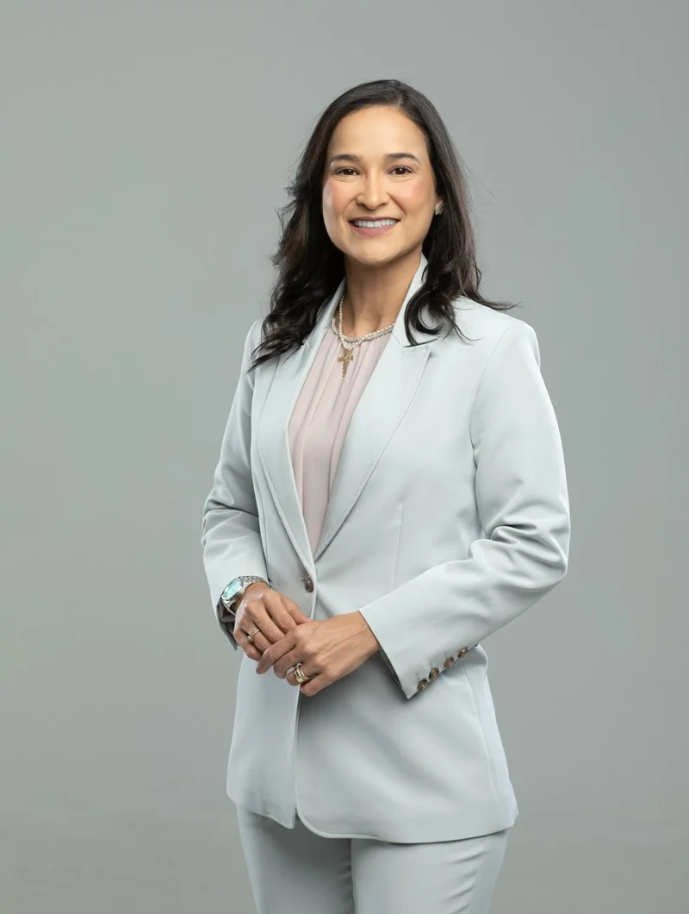
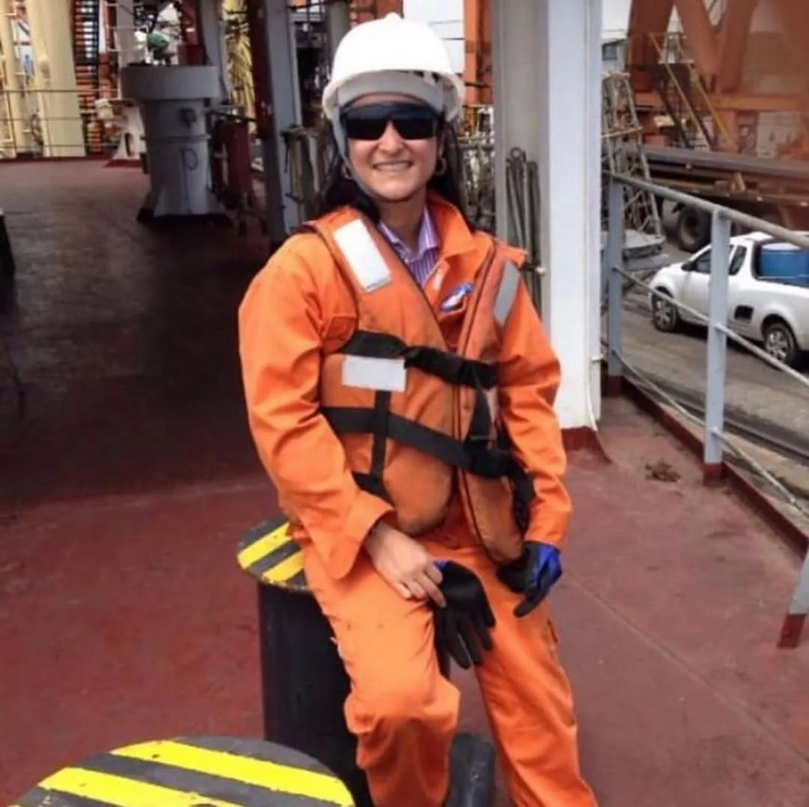
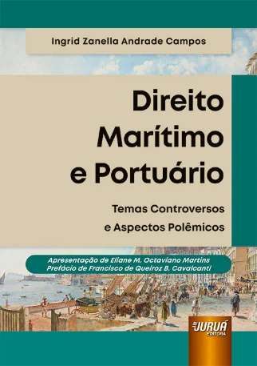
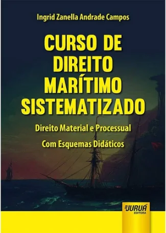
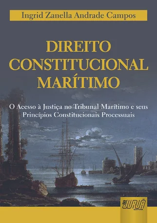
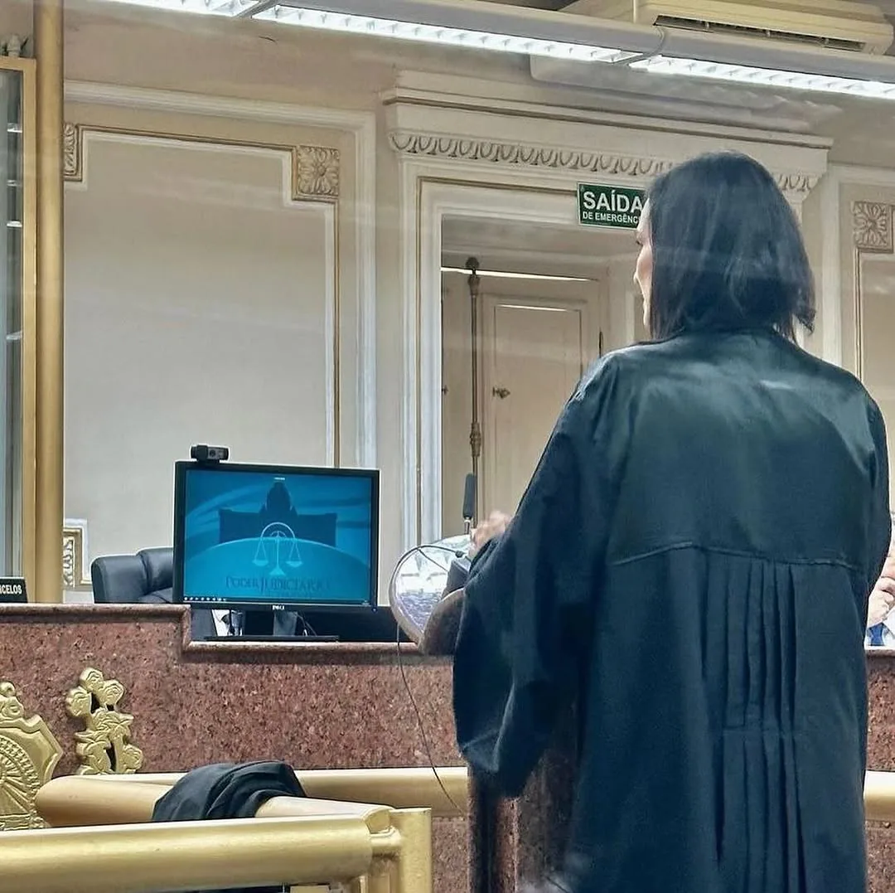
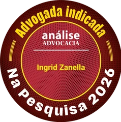
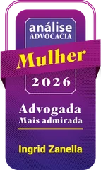
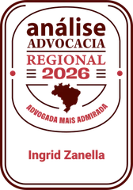

Sobre mimAbout me
Advogada, pesquisadora e professora explorando o Direito Marítimo, Portuário e Ambiental, e o que as novas tecnologias significam para o mar, os portos e as pessoas. Lawyer, researcher and professor exploring maritime, port and environmental law, and what new technologies mean for the sea, ports and people.
Ingrid Zanella é advogada, professora da Universidade Federal de Pernambuco (UFPE) e a primeira mulher a presidir a OAB Pernambuco em 92 anos de história da Seccional. Mestre e doutora em Direito pela UFPE, com tese sobre o turismo de cruzeiros marítimos em Fernando de Noronha, especializou-se em Law of Marine Insurance e Liability for Maritime Claims pelo International Maritime Law Institute (IMLI/IMO), em Malta.
Foi juíza do Tribunal Marítimo (2021-2024), nomeada por decreto presidencial, é árbitra do Centro Brasileiro de Arbitragem Marítima e preside a Comissão Nacional de Direito Marítimo e Portuário do Conselho Federal da OAB. À frente do escritório Ingrid Zanella Advocacia Estratégica, atua em navegação, portos e meio ambiente, e escreve com regularidade na imprensa especializada, em veículos como Estadão, JOTA, Conjur e Migalhas.
Ingrid Zanella is a lawyer, a professor at the Federal University of Pernambuco (UFPE) and the first woman to preside over the Pernambuco Bar (OAB-PE) in the chapter's 92-year history. Holder of a master's and a doctorate in Law from UFPE, with a thesis on maritime cruise tourism in Fernando de Noronha, she specialized in the Law of Marine Insurance and Liability for Maritime Claims at the International Maritime Law Institute (IMLI/IMO) in Malta.
A former judge of the Brazilian Maritime Court (2021-2024), appointed by presidential decree, she is an arbitrator at the Brazilian Maritime Arbitration Center and chairs the National Maritime and Port Law Commission of the Brazilian Bar Federal Council. At the helm of Ingrid Zanella Advocacia Estratégica, she works on shipping, port and environmental matters, and writes regularly for Brazil's specialized legal press, in outlets such as Estadão, JOTA, Conjur and Migalhas.

Trabalho acadêmicoAcademic work Pesquisa & docênciaResearch & teaching
Sua pesquisa concentra-se no Direito Marítimo, Portuário e Ambiental: navegação comercial, acidentes da navegação, seguro marítimo, regulação portuária e proteção do meio ambiente marinho. Mais recentemente, investiga a segurança cibernética no cenário marítimo, os navios autônomos e a proteção de dados no transporte.
A pesquisa se apoia em vivência técnica: Ingrid é auditora ambiental líder de portos, plataformas e refinarias e perita ambiental judicial.
Her research focuses on maritime, port and environmental law: commercial shipping, marine casualties, marine insurance, port regulation and protection of the marine environment. More recently, she investigates maritime cybersecurity, autonomous ships and data protection in transport.
The research is grounded in technical practice: Ingrid is a lead environmental auditor of ports, platforms and refineries and a court-appointed environmental expert.
Na docência, leciona Direito Civil e Direito Marítimo na UFPE e foi professora convidada da Faculdade de Direito da Universidade de Coimbra, onde ministrou responsabilidade civil por riscos cibernéticos em curso avançado. Ensina ainda em programas de pós-graduação por todo o Brasil e orienta dissertações de mestrado.
In teaching, she lectures in Civil Law and Maritime Law at UFPE and was an invited professor at the University of Coimbra Faculty of Law, teaching civil liability for cyber risks in an advanced course. She also teaches in graduate programs across Brazil and supervises master's dissertations.




- Modernização da Advocacia e do Direito EmpresarialModernization of Advocacy and Business Law
Nossa Livraria, 2025 · 341 p. - Direito Marítimo e Portuário: temas controversos e aspectos polêmicosMaritime and Port Law: controversial themes and polemic aspects
Juruá, 2024 · 280 p. - Direito Marítimo, Portuário e AduaneiroMaritime, Port and Customs Law
MLAW, 2021 · 302 p. - Direito Marítimo, Portuário e Aduaneiro: Temas ContemporâneosMaritime, Port and Customs Law: Contemporary Themes
Arraes, 2020 · 250 p. - Curso de Direito Marítimo Sistematizado: Direito Material e ProcessualSystematized Course on Maritime Law: Substantive and Procedural
Juruá, 2017 · 394 p. - Direito Constitucional MarítimoMaritime Constitutional Law
Juruá, 2011 · 194 p.
- Direitos da Personalidade em DebatePersonality Rights in Debate
Nossa Livraria, 2023 - Temas de Direito Civil, Parte Geral (Tomos I e II)Themes of Civil Law, General Part (Volumes I and II)
Nossa Livraria, 2016 - Aspectos Modernos do Direito Marítimo e PortuárioModern Aspects of Maritime and Port Law
Nossa Livraria, 2015
- 2025 · Violência de gênero e processo estrutural: convergências e desafios institucionais.Gender violence and structural litigation: convergences and institutional challenges. Revista Jurídica da Corregedoria Nacional do Ministério Público
- 2025 · A advocacia no direito marítimo: segurança cibernética, navios autônomos e proteção de dados.Legal practice in maritime law: cybersecurity, autonomous ships and data protection. Capítulo em Transporte Aquaviário e o Brasil (D'Plácido)Chapter in Transporte Aquaviário e o Brasil (D'Plácido)
- 2024 · A relevância da tutela pré-arbitral no Direito Marítimo.The relevance of pre-arbitral relief in Maritime Law. Revista Direito Aduaneiro, Marítimo e Portuário
- 2023 · A personalidade judiciária do navio e a responsabilidade civil dos navios autônomos.The ship's legal personality and the civil liability of autonomous ships. Boletim da Sociedade Brasileira de Direito Internacional
- 2023 · Principais impactos da Reforma Tributária nos setores marítimo e portuário.Main impacts of the Tax Reform on the maritime and port sectors. Revista Direito Aduaneiro, Marítimo e Portuário
- 2021 · A segurança cibernética no Direito Marítimo.Cybersecurity in Maritime Law. Cadernos do PPGDir (UFRGS)
- 2016 · Comentários aos artigos 707 a 711 e 766 a 770 do CPC (regulação da avaria grossa; protestos marítimos).Commentary on articles 707 to 711 and 766 to 770 of the Civil Procedure Code (general average adjustment; sea protests). Em Comentários ao Código de Processo Civil, org. Streck, Cunha e Freire (Saraiva)In Comentários ao Código de Processo Civil, ed. Streck, Cunha and Freire (Saraiva)
Mais de 57 artigos e 41 capítulos de livros: produção completa no Over 57 articles and 41 book chapters: full record on the Currículo Lattes →
- 2016Law of Marine Insurance (180h) e Liability for Maritime Claims (120h), International Maritime Law Institute (IMLI/IMO), MaltaLaw of Marine Insurance (180h) and Liability for Maritime Claims (120h), International Maritime Law Institute (IMLI/IMO), Malta
- 2013Doutorado em Direito, UFPE. Tese sobre a conformidade do turismo de cruzeiro marítimo em Fernando de Noronha à luz dos mandamentos constitucionais ambientais de competência e sustentabilidadePhD in Law, UFPE. Thesis on the conformity of maritime cruise tourism in Fernando de Noronha with constitutional environmental mandates of authority and sustainability
- 2011Mestrado em Direito, UFPE, com bolsa CAPES. Dissertação sobre o acesso à justiça por intermédio do Tribunal MarítimoMaster's in Law, UFPE, on a CAPES scholarship. Thesis on access to justice through the Maritime Court
- 2008Graduação em Direito, Faculdades Integradas Barros Melo (FIBAM), OlindaBachelor of Laws, Faculdades Integradas Barros Melo (FIBAM), Olinda
- Formação complementar: Auditora Líder CONAMA 306 (Exemplar Global, 2014) · ISO 14001 (BSI, 2013) · Perícia Judicial Ambiental (2013) · Chartering (BIMCO, 2019) · Segurança Náutica STCW (2010)Further training: CONAMA 306 Lead Auditor (Exemplar Global, 2014) · ISO 14001 (BSI, 2013) · Judicial Environmental Expert (2013) · Chartering (BIMCO, 2019) · STCW Nautical Safety (2010)
- 2023Vice-Coordenadora de Extensão e Cultura do Centro de Ciências Jurídicas da UFPEDeputy Coordinator of Extension and Culture, UFPE Legal Sciences Center
- 2019Corpo editorial da Revista de Direito Aduaneiro, Marítimo e Portuário; conselho da Revista Jurídica da PresidênciaEditorial board of the Revista de Direito Aduaneiro, Marítimo e Portuário; board of the Revista Jurídica da Presidência
- 2019Coordenadora de projeto de pesquisa da UFPE sobre o Direito Marítimo e Comercial em face dos princípios constitucionais do direito privadoCoordinator of a UFPE research project on maritime and commercial law under the constitutional principles of private law
- 2024Comissões examinadoras de concursos públicos do TJPE: delegações de notas e registros (2024) e juiz substituto (2019)Examining boards of Pernambuco Court of Justice public competitions: notary delegations (2024) and substitute judges (2019)
- 2020Organização do XXI International Congress of Maritime Arbitrators (ICMA), com a FGV Direito RioOrganizer of the XXI International Congress of Maritime Arbitrators (ICMA), with FGV Direito Rio
- 2017Coordenadora dos seminários semestrais de Direito Marítimo e Portuário da UFPECoordinator of UFPE's biannual seminars on maritime and port law
- Orientadora de mestrado na Faculdade Damas: mais de uma dezena de dissertações concluídas, além de dezenas de monografias e TCCsMaster's supervisor at Faculdade Damas: over a dozen completed dissertations, plus dozens of monographs and theses
- Idiomas de trabalho: português, inglês e italianoWorking languages: Portuguese, English and Italian
Vida institucionalInstitutional life OAB & presença cívicaOAB & civic presence
Ingrid preside a OAB Pernambuco e a Comissão Nacional de Direito Marítimo e Portuário do Conselho Federal da OAB. Entre 2021 e 2024, foi juíza suplente do Tribunal Marítimo, na vaga de especialista em Direito Marítimo, nomeada por decreto presidencial. Atua também como árbitra do Centro Brasileiro de Arbitragem Marítima e assessora, em comitês técnicos, o Senado Federal e a Câmara dos Deputados.
É Oficial da Ordem do Mérito Naval da Marinha do Brasil, membro fundadora da WISTA Brasil, associação internacional de mulheres do setor marítimo e de comércio, membro titular do Instituto Ibero-Americano de Direito Marítimo e associada da ABDM.
Ingrid presides over the Pernambuco Bar (OAB-PE) and chairs the National Maritime and Port Law Commission of the Brazilian Bar Federal Council. From 2021 to 2024 she served as a deputy judge of the Brazilian Maritime Court, in the seat reserved for maritime law specialists, appointed by presidential decree. She also acts as an arbitrator at the Brazilian Maritime Arbitration Center and advises the Federal Senate and the Chamber of Deputies on technical committees.
She is an Officer of the Order of Naval Merit of the Brazilian Navy, a founding member of WISTA Brazil, the international association of women in shipping and trade, a full member of the Ibero-American Institute of Maritime Law and a member of the Brazilian Maritime Law Association.
- 2026Medalha Bernardette Pedrosa · Academia Pernambucana de Letras JurídicasBernardette Pedrosa Medal · Pernambuco Academy of Legal Letters
- 2025Bravas Pernambucanas · Tribunal de Justiça de PernambucoBravas Pernambucanas · Pernambuco Court of Justice
- 2025Mérito Judiciário Des. Joaquim Nunes Machado · TJPEJudicial Merit Award · Pernambuco Court of Justice
- 2022Medalha do Mérito Eleitoral Frei Caneca, classe Comendador · TRE-PEFrei Caneca Electoral Merit Medal, Commander class · TRE-PE
- 2021Heroínas de Tejucupapo · OAB-PEHeroines of Tejucupapo · OAB-PE
- 2025Membro honorário · Força Aérea BrasileiraHonorary member · Brazilian Air Force
- 2020Título Amigo da Marinha · Marinha do BrasilFriend of the Navy title · Brazilian Navy
- 2014Oficial da Ordem do Mérito Naval · Marinha do BrasilOfficer of the Order of Naval Merit · Brazilian Navy
Além de títulos de cidadã honorária concedidos por doze municípios pernambucanos, de Olinda e Caruaru a Petrolina, e de dezenas de outras homenagens.Plus honorary citizenship titles granted by twelve municipalities of Pernambuco, from Olinda and Caruaru to Petrolina, and dozens of other tributes.
Na mídiaIn the news NotíciasNews
- jul 2026 · Plano de Trump de cobrar pedágio para proteger Ormuz viola Convenção da ONU e tradição jurídica Estadão
- jul 2026 · Medalha de Mérito Olegária Mariano é entregue a Ingrid Zanella Encontra Recife
- jul 2026 · OAB-PE promove audiência sobre o fim da escala de trabalho 6x1 OAB-PE
- jul 2026 · Presidente Ingrid Zanella e membros da OAB-PE recebem Votos de Aplausos OAB-PE · Câmara do Recife
- 2026 · Em São Paulo, presidente Ingrid Zanella participa do ENJA 2026 OAB-PE
- mai 2026 · Jubileu de Ouro da APLJ entrega a Medalha Bernardette Pedrosa Taís Paranhos
- nov 2025 · Ingrid Zanella faz balanço do primeiro ano à frente da OAB-PE PodJá · Jamildo
Cobertura completa no Full coverage on the portal OAB-PE →
Contencioso & consultoriaLitigation & advisory Ingrid Zanella Advocacia EstratégicaIngrid Zanella Advocacia Estratégica
Ingrid Zanella Advocacia Estratégica é um escritório com atuação especializada em Direito Marítimo, Portuário, Administrativo, Regulatório, Ambiental e Aduaneiro, com soluções jurídicas inovadoras, criativas e personalizadas.
Inserido nas discussões relevantes sobre infraestrutura no Brasil, o escritório desenvolve soluções completas para projetos, apoia a resolução de conflitos e conecta agentes públicos e privados, com a condução direta de Ingrid em cada caso.
Ingrid Zanella Advocacia Estratégica is a law firm specialized in maritime, port, administrative, regulatory, environmental and customs law, with innovative, creative and tailored legal solutions.
Engaged in Brazil's relevant infrastructure debates, the firm develops complete solutions for projects, supports dispute resolution and connects public and private players, with Ingrid's direct conduction of every case.




- Direito MarítimoMaritime Law
contratos e transporte internacional (INCOTERMS), cargo claim, demurrage, avaria, limitação de responsabilidade, acidentes da navegação e Tribunal Marítimocontracts and international carriage (INCOTERMS), cargo claims, demurrage, average, limitation of liability, marine casualties and the Maritime Court - Direito PortuárioPort Law
infraestrutura e regulação, licitações, contratos portuários, reequilíbrio econômico-financeiro, EVTEA e taxas portuáriasinfrastructure and regulation, public tenders, port contracts, economic-financial rebalancing, feasibility studies and port fees - Direito AmbientalEnvironmental Law
licenciamento, auditoria ambiental (CONAMA 306), sinistros com danos ambientais, contencioso estratégico e análise de riscoslicensing, environmental auditing (CONAMA 306), environmental casualties, strategic litigation and risk analysis - Direito Aduaneiro e Comércio ExteriorCustoms & Foreign Trade Law
regimes aduaneiros, licenças de importação, AFRMM, OEA e contenciosocustoms regimes, import licensing, AFRMM, AEO and litigation - Direito Administrativo e RegulatórioAdministrative & Regulatory Law
processos administrativos, licitações e contratos, benefícios fiscais, REPORTO e REIDIadministrative proceedings, tenders and contracts, tax incentives, REPORTO and REIDI - Contencioso Cível EstratégicoStrategic Civil Litigation
responsabilidade civil, arbitragens, negociações, mediações e estratégias processuaiscivil liability, arbitration, negotiation, mediation and procedural strategy - Relações InstitucionaisInstitutional Relations
propostas normativas, revisão de projetos de lei, audiências públicas e interlocução entre agentes públicos e privadosnormative proposals, bill review, public hearings and dialogue between public and private players
Para consultas, pareceres ou representação, For inquiries, legal opinions or representation, entre em contato →get in touch →
ContatoContact
- E-mailingrid@ingridzanella.com
- AcadêmicoAcademicingrid.zanella@ufpe.br
- Latteslattes.cnpq.br/4580592135492267
- EscritórioOfficeAv. Rui Barbosa, 715, sala 408 · Empresarial Rui Barbosa · Graças, Recife-PE · 52011-010
- Instagram@zanellaingrid